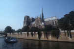
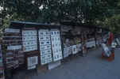

You can "redesign" the elements on this page by dragging and dropping them wherever you want.
Splendida porro oculi fugitant vitantque tueri. sol etiam caecat, contra si tendere pergas,propterea quia vis magnast ipsius et altea�ra per purum simulacra ferunturet feriunt oculos turbantia composituras. Praeterea splendor qui cumque est acer adurit saepe oculos ideo quod semina possidet ignismulta, dolorem oculis quae gignunt insinuando.lurida praeterea fiunt quae cumque tuenturarquati, quia luroris de corpore eorumsemina multa fluunt simulacris obvia rerum, multaque sunt oculis in eorum denique mixta,quae contage sua palloribus omnia pingunt. luroris de corpore eorumsemina multa fluunt simulacris obvia rerum
Splendida porro oculi fugitant vitantque tueri. sol etiam caecat, contra si tendere pergas,propterea quia vis magnast ipsius et altea�ra per purum simulacra ferunturet feriunt oculos turbantia composituras. Praeterea splendor qui cumque est acer adurit saepe oculos ideo quod semina possidet ignismulta, dolorem oculis quae gignunt insinuando.lurida praeterea fiunt quae cumque tuenturarquati, quia luroris de corpore eorumsemina multa fluunt simulacris obvia rerum, multaque sunt oculis in eorum denique mixta,quae contage sua palloribus omnia pingunt. luroris de corpore eorumsemina multa fluunt simulacris obvia rerum
Splendida porro oculi fugitant vitantque tueri. sol etiam caecat, contra si tendere pergas,propterea quia vis magnast ipsius et altea�ra per purum simulacra ferunturet feriunt oculos turbantia composituras. Praeterea splendor qui cumque est acer adurit saepe oculos ideo quod semina possidet ignismulta, dolorem oculis quae gignunt insinuando.lurida praeterea fiunt quae cumque tuenturarquati, quia luroris de corpore eorumsemina multa fluunt simulacris obvia rerum, multaque sunt oculis in eorum denique mixta,quae contage sua palloribus omnia pingunt. luroris de corpore eorumsemina multa fluunt simulacris obvia rerum
quia luroris de corpore eorumsemina multa fluunt simulacris obvia rerum, multaque sunt oculis in eorum denique mixta,quae contage sua palloribus omnia pingunt. luroris de corpore eorumsemina multa fluunt simulacris obvia rerum